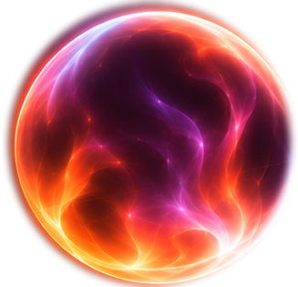

RESEARCH OBSERVATORY
Fire Beyond
Gravity.
A unified scientific platform for microgravity flame research across NASA experiments.
Loading NASA research…
Explore Experiments
View Findings

Key findings and relationships across
independent NASA investigations.
Five evidence-led questions across NASA investigations. We show where observations align—and where the experiment, conditions, and conclusions diverge.
Select a research question to inspect NASA-sourced evidence.
Real BASS-II records, not decorative simulation. Explore how measured PMMA spread varied across material thickness and how fabric test outcomes were classified.
18 independent test-run means · mm/s
27 test records · outcome categories
Eight test records involved previously burned specimens. Classifications must be read in the context of the NASA test notes.
Trace each discovery back to an investigation, its materials and test conditions, and the original NASA research record.
Select an investigation to read its findings.
Questions are answered against retrieved NASA evidence, with explicit citations and uncertainty. This feature appears only if your backend is connected.
The papers, records, and original NASA research sources behind ARCAUS. Every source link opens the original resource.
Loading original research sources…
ARCAUS is an independent research observatory, not a certified spacecraft-fire safety model. Where the source record leaves uncertainty, we keep it visible.
Reading source-bundle integrity status…
OpenSpace is a separate open-source visualization platform. ARCAUS does not embed it or use it to simulate the NASA flame studies.